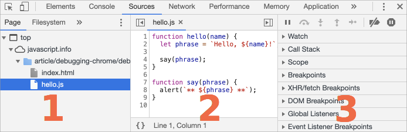
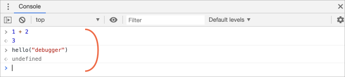
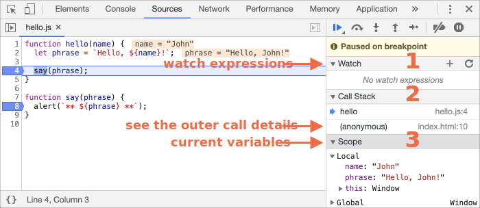

在编写更复杂的代码前，让我们先来聊聊调试吧。
调试 是指在一个脚本中找出并修复错误的过程。所有的现代浏览器和大多数其他环境都支持调试工具 —— 开发者工具中的一个令调试更加容易的特殊用户界面。它也可以让我们一步步地跟踪代码以查看当前实际运行情况。
在这里我们将会使用 Chrome（谷歌浏览器），因为它拥有足够多的功能，其他大部分浏览器的功能也与之类似。
你的 Chrome 版本可能看起来有一点不同，但是它应该还是处于很明显的位置。
key:F12（Mac：key:Cmd+Opt+I）打开开发者工具。Sources（资源） 面板。如果你是第一次这么做，那你应该会看到下面这个样子：
切换按钮 会打开文件列表的选项卡。
让我们在预览树中点击和选择 hello.js。这里应该会如下图所示：

资源（Sources）面板包含三个部分：
现在你可以再次点击切换按钮 隐藏资源列表来给代码腾出一些空间。
如果我们按下 key:Esc，下面会出现一个控制台，我们可以输入一些命令然后按下 key:Enter 来执行。
语句执行完毕之后，其执行结果会显示在下面。
例如，1+2 将会返回 3，hello("debugger") 函数什么也不返回，因此结果是 undefined：

我们来看看 示例页面 发生了什么。在 hello.js 中，点击第 4 行。是的，就点击数字 "4" 上，不是点击代码。
恭喜你！你已经设置了一个断点。现在，请在第 8 行的数字上也点击一下。
看起来应该是这样的（蓝色是你应该点击的地方）：

断点 是调试器会自动暂停 JavaScript 执行的地方。
当代码被暂停时，我们可以检查当前的变量，在控制台执行命令等等。换句话说，我们可以调试它。
我们总是可以在右侧的面板中找到断点的列表。当我们在数个文件中有许多断点时，这是非常有用的。它允许我们：
在行号上 **右键单击** 允许你创建一个 **条件** 断点。只有当给定的表达式为真（即满足条件）时才会被触发。
当我们需要在特定的变量值或参数的情况下暂停程序执行时，这种调试方法就很有用了。我们也可以使用 debugger 命令来暂停代码，像这样：
function hello(name) {
let phrase = `Hello, ${name}!`;
*!*
debugger; // <-- 调试器会在这停止
*/!*
say(phrase);
}当我们在一个代码编辑器中并且不想切换到浏览器在开发者工具中查找脚本来设置断点时，这真的是非常方便。
在我们的例子中，hello() 函数在页面加载期间被调用，因此激活调试器的最简单的方法（在我们已经设置了断点后）就是 —— 重新加载页面。因此让我们按下 key:F5（Windows，Linux）或 key:Cmd+R（Mac）吧。
设置断点之后，程序会在第 4 行暂停执行：

请打开右侧的信息下拉列表（箭头指示出的地方）。这里允许你查看当前的代码状态：
察看（Watch） —— 显示任意表达式的当前值。
你可以点击加号 + 然后输入一个表达式。调试器将随时显示它的值，并在执行过程中自动重新计算该表达式。
调用栈（Call Stack） —— 显示嵌套的调用链。
此时，调试器正在 hello() 的调用链中，被 index.html 中的一个脚本调用（这里没有函数，因此显示 "anonymous"）
如果你点击了一个堆栈项，调试器将跳到对应的代码处，并且还可以查看其所有变量。
作用域（Scope） —— 显示当前的变量。
Local 显示当前函数中的变量，你还可以在源代码中看到它们的值高亮显示了出来。
Global 显示全局变量（不在任何函数中）。
这里还有一个 this 关键字，目前我们还没有学到它，不过我们很快就会学习它了。
现在是 跟踪 脚本的时候了。
在右侧面板的顶部是一些关于跟踪脚本的按钮。让我们来使用它们吧。
—— “恢复（Resume）”：继续执行，快捷键 key:F8。
: 继续执行。如果没有其他的断点，那么程序就会继续执行，并且调试器不会再控制程序。
我们点击它一下之后，我们会看到这样的情况：

执行恢复了，执行到 `say()` 函数中的另外一个断点后暂停在了那里。看一下右边的 "Call stack"。它已经增加了一个调用信息。我们现在在 `say()` 里面。 —— “下一步（Step）”：运行下一条指令，快捷键 key:F9。
: 运行下一条语句。如果我们现在点击它，alert 会被显示出来。
一次接一次地点击此按钮，整个脚本的所有语句会被逐个执行。 —— “跨步（Step over）”：运行下一条指令，但 不会进入到一个函数中，快捷键 key:F10。
: 跟上一条命令“下一步（Step）”类似，但如果下一条语句是函数调用则表现不同。这里的函数指的是：不是内置的如 alert 函数等，而是我们自己写的函数。
“下一步（Step）”命令进入函数内部并在第一行暂停执行，而“跨步（Step over）”在无形中执行函数调用，跳过了函数的内部。
执行会在该函数执行后立即暂停。
如果我们对该函数的内部执行不感兴趣，这命令会很有用。 —— “步入（Step into）”，快捷键 key:F11。
: 和“下一步（Step）”类似，但在异步函数调用情况下表现不同。如果你刚刚才开始学 JavaScript，那么你可以先忽略此差异，因为我们还没有用到异步调用。
至于之后，只需要记住“下一步（Step）”命令会忽略异步行为，例如 `setTimeout`（计划的函数调用），它会过一段时间再执行。而“步入（Step into）”会进入到代码中并等待（如果需要）。详见 [DevTools 手册](https://developers.google.com/web/updates/2018/01/devtools#async)。 —— “步出（Step out）”：继续执行到当前函数的末尾，快捷键 key:Shift+F11。
: 继续执行代码并停止在当前函数的最后一行。当我们使用 偶然地进入到一个嵌套调用，但是我们又对这个函数不感兴趣时，我们想要尽可能的继续执行到最后的时候是非常方便的。
—— 启用/禁用所有的断点。 : 这个按钮不会影响程序的执行。只是一个批量操作断点的开/关。
—— 启用/禁用出现错误时自动暂停脚本执行。 : 当启动此功能并且开发者工具是打开着的时候，任何一个脚本的错误都会导致该脚本执行自动暂停。然后我们可以分析变量来看一下什么出错了。因此如果我们的脚本因为错误挂掉的时候，我们可以打开调试器，启用这个选项然后重载页面，查看一下哪里导致它挂掉了和当时的上下文是什么。
在代码中的某一行上右键，在显示的关联菜单（context menu）中点击一个非常有用的名为 "Continue to here" 的选项。
当你想要向前移动很多步到某一行为止，但是又懒得设置一个断点时非常的方便。想要输出一些东西到控制台上？console.log 函数可以满足你。
例如：将从 0 到 4 的值输出到控制台上：
// 打开控制台来查看
for (let i = 0; i < 5; i++) {
console.log("value", i);
}普通用户看不到这个输出，它是在控制台里面的。要想看到它 —— 要么打开开发者工具中的 Console（控制台）选项卡，要么在一个其他的选项卡中按下 key:Esc：这会在下方打开一个控制台。
如果我们在代码中有足够的日志记录，那么我们可以从记录中看到刚刚发生了什么，而不需要借助调试器。
我们可以看到，这里有 3 种方式来暂停一个脚本：
debugger 语句。当脚本执行暂停时，我们就可以进行调试 —— 检查变量，跟踪代码来查看执行出错的位置。
开发人员工具中的选项比本文介绍的多得多。完整的手册请点击这个链接查看：https://developers.google.com/web/tools/chrome-devtools。
本章节的内容足够让你上手代码调试了，但是之后，尤其是你做了大量关于浏览器的东西后，推荐你查看上面那个链接中讲的开发者工具更高级的功能。
对了，你也可以点击开发者工具中的其他地方来看一下会显示什么。这可能是你学习开发者工具最快的方式了。不要忘了还有右键单击和关联菜单哟。